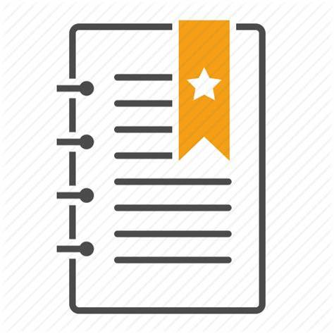

Guilherme barbosa da silva sou estudante de Engenharia de Software na  Estácio estou aprendendo sobre lógica da programação e Dev full-stack na
Estácio estou aprendendo sobre lógica da programação e Dev full-stack na  FAISP
FAISP
Desenvolvimento full-stack engloba tanto o dev front-end como o banco de dados que é a interface visual do usúario até o banco de dados
Acesse meu
Meu HOBBY

SOBRE
- FLSTUDIO
- O FL Studio, também conhecido como Fruity Loops, é uma estação de trabalho digital (DAW) muito popular entre produtores musicais.
 Origem
Origem- O FL Studio foi criado em 1997 por Didier Dambrin e, inicialmente, era um sequenciador de batidas chamado "Fruity Loops". Com o passar dos anos, evoluiu para uma DAW completa, sendo amplamente utilizada em gêneros como eletrônica, hip-hop e pop.
- Tópicos
- Interface do Usuário
- O FL Studio possui uma interface intuitiva, com um design baseado em padrões de sequenciamento, facilitando a criação de músicas.
- Piano Roll
- Uma das ferramentas mais elogiadas, permite a edição de melodias e harmonias com precisão, possibilitando arranjos complexos.
- Mixer
- Oferece um mixer poderoso para processamento de áudio, com suporte a efeitos e automação, permitindo um controle detalhado sobre cada canal.
- VST Plugins:
- Suporte a uma ampla gama de plugins VST, permitindo que os usuários expandam suas bibliotecas de sons e efeitos.
- Samples e Loops:
- Inclui uma vasta coleção de samples e loops, que ajudam na criação de faixas rapidamente.
- Automação:
- Permite automatizar parâmetros de efeitos e instrumentos, dando vida e dinâmica às produções.
Acesse minhas criações de projetos 2ªPágina
Meu Cronograma
Cronograma
Cronograma
| Cronograma |
| NEW |
| Horarios |
| NEW |
| 05:00 AM |
06:00 AM |
07:00 AM |
08:00 AM |
09:00 AM |
10:00 AM |
11:00 AM |
12:00 PM |
13:00 PM |
14:00 PM |
15:00 PM |
16:00 AM |
17:00 PM |
18:00 PM |
19:00 PM |
20:00 PM |
21:00 PM |
22:00 PM |
23:00 PM |
00:00 PM |
| NEW |
| Atividades |
| NEW |
| Despertar |
Acordar |
Iniciar |
Preparar |
Arrumar a cama |
Preparar o café |
Ir a academia |
Treinar |
Voltar |
Almoçar |
Estudar |
Meditar |
Ouvir |
Praticar |
Ir ao trabalho |
Intervalo |
Voltar |
Tomar banho |
Jantar |
Estudar |
| NEW |
| Status |
| NEW |
| Bom |
Ótimo |
Legal |
Excelente |
Bom demais |
Maravilha |
Daora |
Mais ou menos |
Divertido |
Melhor ainda |
Muito bom |
Extraordinário |
Lets,go |
Nice |
Good |
Very nive |
Very good |
Right now |
Descansado |
Paz |
| NEW |
| NOTAS |
| NEW |
| 10 |
8 |
9 |
8 |
8 |
9 |
6 |
7 |
8 |
9 |
10 |
10 |
8 |
8 |
9 |
9 |
7 |
8 |
7 |
7 |
| NEW |
| FIM |
Estácio de Sá
SOBRE
 Missão
Missão- Integramos academia e gestão para oferecer uma educação transformadora ao maior número de pessoas, criando impacto positivo para a sociedade.
 Visão
Visão- EDUCAR PARA TRANSFORMAR
 Valores
Valores- Foco no aluno
- O aluno é nossa razão de ser.
- Gente e Meritocracia
- Valorizamos e reconhecemos o mérito do maior ativo que possuímos: nossa gente.
- Inovação
- Devemos criar e ousar sempre.
- Simplicidade
- Devemos ser simples para sermos ágeis e austeros.
- Resultado
- Perseguimos resultados extraordinários com paixão e método, agindo sempre como “donos”.
- Ética
- Não toleramos desvios de conduta.
- Excelência
- Perseguimos a excelência na prestação de serviços dentro e fora da sala de aula.
- Hospitalidade
- Tratamos as pessoas como gostamos de ser tratados.
Materias Cursadas
Engenharia de Software
Cursadas
| Comportamento Organizacioanl |
| Metodos da equipe se comportar dentro de uma organização |
| Python |
| Linguagem de Alto nível multiparadigma orientada e estruturada á objetos |
| Segurança da informação |
| Proteção de dados contra ataques cibernéticos realizados por hackers |
| Pensamento Computacioanl |
| Forma de pensa e raciocinar do desenvolvedor |
| Arquitetura computacional |
| Comunicação e interação entre o software e o hardware |
| FIM |
Materias que Faltam
Engenharia de software
Faltam
| Big data em Python |
| Grande volume dados usado no python utilizando bibliotecas e ferramentas |
| Java orientado á objetos |
| Linguagem de programação utilizada para desenvolvimento mobile |
| Modelagem de processos |
| É uma técnica utilizada para representar, analisar e otimizar processos organizacionais. |
| Banco de dados |
| É uma coleção organizada de dados que permite o armazenamento, gerenciamento e recuperação de informações de forma eficiente |
| Engenharia de usabilidade |
| É uma disciplina focada em melhorar a experiência do usuário (UX) em produtos e sistemas |
| FIM |
linguagens
Programação
 Python
Python- Linguagem de programação de alto nível, conhecida por sua sintaxe clara e legibilidade, amplamente usada em ciência de dados, automação e desenvolvimento web.
 JAVA
JAVA- Linguagem orientada a objetos e multiplataforma, popular para desenvolvimento de aplicações empresariais e móveis, especialmente em ambientes Android.
 C
C- Linguagem de programação de baixo nível, essencial para o desenvolvimento de sistemas e aplicações que exigem alto desempenho, como sistemas operacionais e drivers.
 C++
C++- Extensão do C que adiciona recursos de programação orientada a objetos, utilizada em desenvolvimento de software de alto desempenho, jogos e sistemas complexos.
 C#
C#- Linguagem desenvolvida pela Microsoft, utilizada principalmente para desenvolvimento de aplicativos na plataforma .NET, incluindo jogos com Unity e aplicações de desktop.
 Ruby
Ruby- Linguagem de programação dinâmica e orientada a objetos, famosa pelo framework Ruby on Rails, que simplifica o desenvolvimento web.
 PHP
PHP- Linguagem de script do lado do servidor, amplamente usada para desenvolvimento web e criação de sites dinâmicos, conhecida pela sua facilidade de integração com bancos de dados.
 Javascript
Javascript- Linguagem de programação essencial para o desenvolvimento web, permitindo interatividade e dinamismo nas páginas, com ampla aplicação em front-end e back-end (Node.js).
Meus Certificados
Entre em Contato